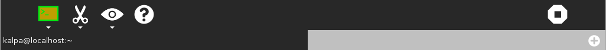

Terminal¶
About¶
Terminal is a full-screen text mode program that provides a Command-Line Interface (CLI) to the software on a Linux system. Users type (sometimes cryptic) commands to perform file management, system administration, or in fact almost anything that can be done within Linux that does not involve graphics or video.
For example, typing pwd (Print name of current/Working Directory) at the command line in the home directory gives that location, and typing ls at the command line lists the content of the current directory.
Where to get Terminal¶
Terminal is provided with Sugar. However, by default it is not selected for display in the Home view as a Favorite.
To select Terminal as a Favorite, go to Home view, then click the List view icon. Type Te into the search box. Click the star next to Terminal. When you switch back to the ring of icons in Home view, Terminal will be visible.
Alternatively, you can leave Terminal unselected, and start it from list view by clicking its icon or selecting Start from its hover menu.
Using¶
Type commands with options that modify their effects and arguments, usually file names or other indications of where to get input and where to put output.
Examples: pwd and ls, as shown above
Chain programs together, so that the following program processes the output of the earlier program.
ls | grep "Sugar"
Get a listing of the current directory, but show only lines where the file or directory name includes the text “Sugar”. The | symbol, pronounced pipe, represents the data link between the programs.
Get information on programs. For example, many commands respond to the -h or –help options with a concise summary.
grep -h
Usage: grep [OPTION]... PATTERN [FILE]...
Try `grep --help' for more information.
The man and info utilities are also available, except on particularly small computers like the OLPC XO.
The Toolbar¶

Activity: Name this session and add a description to Journal
Edit (scissors icon): Copy and Paste
View (eye icon): Increase or Decrease font size, view in full screen
Help: Display useful commands
Stop: Close terminal activity
Tabs: Open and close tabs
Learning with Terminal¶
Terminal is essential to learning advanced Linux functions, such as system administration, compiling software, and many other such topics.
Extending Terminal¶
Users have the option of installing text-mode software that works in a terminal window. Examples include text editors such as pico, or file managers.
See the FLOSS Manuals manuals
Terminal about the Sugar Terminal activity
Introduction to the Command Line for a user’s tutorial on command line functions
Where to report problems¶
Please report bugs and make feature requests at terminal-activity/issues.